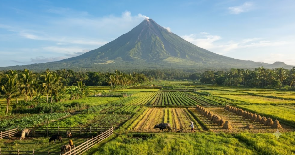

Under Regard of Mayon: The Ancient Bounty of Volcanic Soil
At Terra Taste, our culinary identity is deeply rooted in the dramatic landscape and living history of Mother Earth. Dominating the horizon with its breathtaking, symmetrical perfection, Mayon Volcano is more than just a majestic landmark—it is the ancient heartbeat of our region's agriculture.
Centuries of mineral-rich volcanic ash have enriched our soil, creating a living canvas where crops thrive with exceptional vitality and distinct flavor profiles. This unique geological history bridges our ancestral past with sustainable modern farming, ensuring that every harvest is an authentic expression of the earth's natural power.
Mineral-Dense Earth
Volcanic nutrients provide natural, chemical-free fertilization for crops.
Ancestral Legacy
Honoring centuries-old traditions passed down by generations of caretakers.